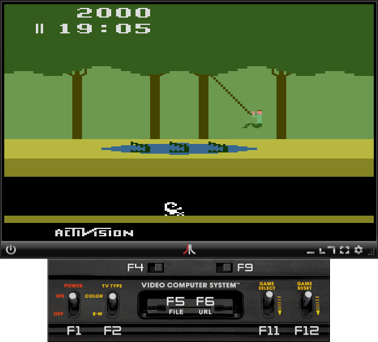

Click the screenshot to launch it online, or download the full version executable JAR
Needs Java 6 or greater and Atari ROMs.
New in version 3.10
- Added Joystick support (Windows and Linux)
- Fully selectable axes with deadzone adjustment
- Paddles analog emulation with adjustable sensitivity and centering
- Other console controls can be mapped to Joystick buttons
- Better compatibility in Linux and Mac OSX
Visit the project homepage for changelog and release notes.
Unique Features
- Client-Server multiplayer mode. Runs great in low-latency networks such as LANs.
- Drag&Drop and Copy&Paste of ROM files or URLs. Very easy to try ROMs from websites!
- Scanlines and TV screen emulation modes.
- Real Atari console user interface.
Controls
Please see Help tab in the integrated Settings window
To start Multiplayer Client/Server sessions:
No more command line options! Just use the Multiplayer tab in Settings window